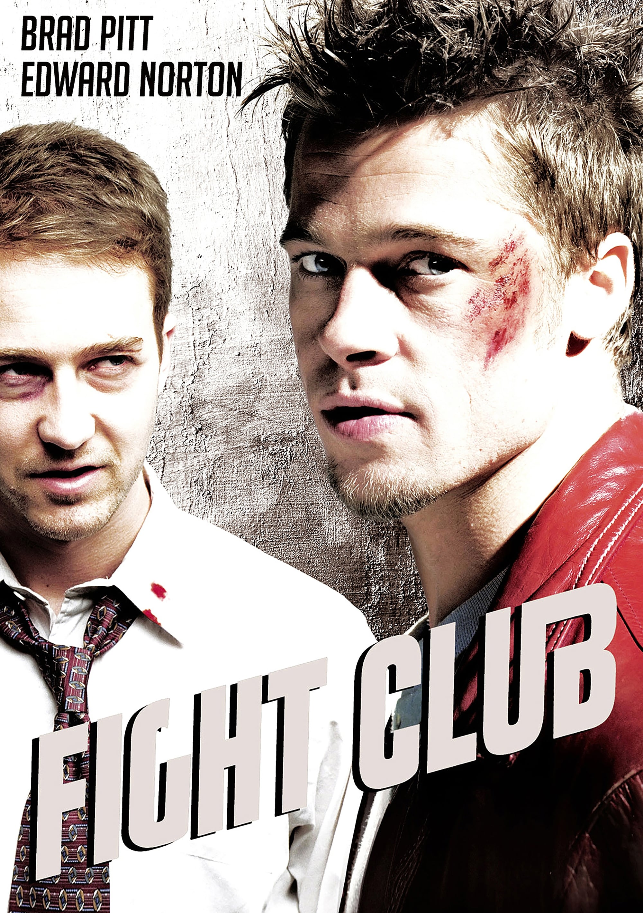

Inici
Bienvenidos a la página web NO oficial de: "El Club de la Lucha", aqui podréis observar y aprender información relevante o no de esta pelicula.
Bienvenidos a la página web NO oficial de: "El Club de la Lucha", aqui podréis observar y aprender información relevante o no de esta pelicula.

Fight Club o El club de lluita és una pel·lícula de 1999 basada en la novel·la de Chuck Palahniuk, Club de lluita. Va ser dirigida per David Fincher i protagonitzada per Brad Pitt, Edward Norton, i Helena Bonham Carter.
Un home anònim i descontent amb la seva vida monòtona anomenat Narrador s?uneix a un carismàtic individu anomenat Tyler Durden per crear un club clandestí de lluita, on homes insatisfets s?enfronten per alliberar la seva frustració.
Aquest personatge es interpretat per l'actor, productor i director de cinema estadounidens Edward James Norton, Jr. El narrador pateix insomni crònic, cosa que li provoca un sentiment profund d'insatisfacció amb la seva vida. Menysprea el seu treball com a coordinador de trucades a revisió d'una empresa automobilística i se sent atrapat en un cicle de consumisme i materialisme. Com a resultat del seu insomni i desil·lusió, el narrador desenvolupa una doble personalitat.
Aquest personatge es interpretat per l'actor, productor i activista social estatunidenc Brad Pitt. Tyler Durden és l'alter ego del narrador. Desprèn un encant captivador que atrau la gent cap a ell. La seva personalitat magnètica i la seva seguretat en ell mateix el converteixen en un líder natural. Tyler encarna una mentalitat poc convencional, desafia les normes socials i rebutja els paranys de la cultura consumista. Advoca per un estil de vida minimalista i rebutja la recerca de possessions materials.
Interpretada per l'actriu anglesa Helena Bonham Carter, Marla Singer és una dona problemàtica que el narrador coneix a les reunions d'un grup de suport. Es relaciona tant amb el narrador com amb Tyler Durden i entaula amb totes dues relacions complicades. Mostra signes de depressió, distanciament i una sensació general de desesperació que es reflecteix en el comportament erràtic i l'estil de vida poc convencional.
Interpretat per l'actor i cantant de rock estatunidenc Meat Loaf, nom artístic de Michael Lee Aday; Robert és un antic culturista que ha desenvolupat “tetas de perra” a causa del consum d'esteroides. Tot i la seva imponent estatura física, té una veu suau i es preocupa de debò pels altres. La vulnerabilitat de Robert queda palesa en les lluites emocionals i la transformació física. La lluita contra els problemes d'imatge corporal i la càrrega emocional que li suposa posen de manifest la seva vulnerabilitat i l'impacte de les expectatives socials.
Interpretat per el músic i actor estatunidenc Jared Leto, “Cara de Ángel” és descrit com físicament atractiu, posseïdor d'un aspecte atractiu i juvenil. El seu bon aspecte contribueix al seu paper com a símbol de bellesa al violent món del club de la lluita. Cara de Ángel encarna una innocència que contrasta amb la brutalitat del club de la lluita. Tot i el seu atractiu físic, es mostra vulnerable al club de la lluita. Es converteix en blanc d'agressions i violència, cosa que posa en relleu la seva susceptibilitat a patir danys al brutal món creat per Tyler Durden.
| Película | Fight Club | Fight Club | Fight Club | Fight Club | Fight Club |
|---|---|---|---|---|---|
| Actor | Edward James Norton, Jr. | Brad Pitt | Helena Bonham Carter | Meat Loaf/ Michael Lee Aday | Jared Leto |
| Edat | 55 anys | 60 anys | 58 anys | 78 anys | 52 anys |
| Paper interpretat | Narrador/Jack | Tyler Durden | Marla Singer | Robert Bob Paulson | Cara de Ángel |
Fight Club (conocida como El club de la lucha en España y El club de la pelea en Hispanoamérica) es una película de 1999 basada en la novela homónima de Chuck Palahniuk. La cinta fue dirigida por David Fincher y protagonizada por Edward Norton, Brad Pitt y Helena Bonham Carter. Norton interpreta al protagonista, un "hombre común", cuyo nombre no se revela, que está aburrido con su profesión liberal en la sociedad estadounidense, por lo que funda un "club de lucha" con un vendedor de jabones llamado Tyler Durden e interpretado por Brad Pitt, y se ve envuelto en una relación con éste y con Marla Singer, interpretada por Bonham Carter.
La novela de Palahniuk fue escogida por Laura Ziskin, productora de la 20th Century Fox, quien contrató a Jim Uhls para escribir el guion de la adaptación cinematográfica. David Fincher fue uno de los cuatro directores considerados y finalmente fue contratado por su entusiasmo hacia el proyecto. Fincher desarrolló el guion con Uhls y solicitó la ayuda en su escritura a actores y otros miembros de la industria del cine. El director y el elenco compararon la película con Rebelde sin causa de 1955 y El Graduado de 1967. Fincher intentó que la violencia de la cinta sirviese como metáfora del conflicto entre las generaciones jóvenes y el sistema de valores de la publicidad. El director copió los matices homoeróticos de la novela de Palahniuk para hacerla incómoda al público y evitar que anticipasen el dramático giro del final.
Edward Harrison Norton (Boston, Massachusetts,1 18 de agosto de 1969)2 es un actor, guionista, director y productor de cine estadounidense. Ha ganado un Globo de Oro (por Primal Fear) y ha sido nominado en tres ocasiones al Óscar (por Primal Fear, American History X y Birdman).
William Bradley Pitt (Shawnee, Oklahoma; 18 de diciembre de 1963) conocido como Brad Pitt, es un actor, modelo y productor de cine estadounidense. Por su trabajo interpretativo ha sido nominado cuatro veces a los Premios Óscar, alzándose con la estatuilla como mejor actor de reparto por su actuación en Once Upon a Time in Hollywood3(2020). Ha sido ganador de dos Premios Globo de Oro, como mejor actor de reparto en 1995 y 2020.4 Su significativa presencia mediática se debe también a su consideración como uno de los hombres más atractivos del mundo.
Helena Bonham Carter (Londres, Inglaterra, 26 de mayo de 1966) es una actriz británica, ganadora del premio BAFTA, y dos veces nominada a los Premios Óscar. Hizo su debut como actriz en una adaptación para televisión de A Pattern of Roses antes de obtener su primer papel como protagonista en Lady Jane. Es conocida por sus papeles en películas como Una habitación con vistas, Fight Club, Las alas de la paloma y El discurso del rey (por estas dos últimas recibió nominaciones a los Óscar), y por interpretar a la villana Bellatrix lestrange en las películas de Harry Potter.
Michael Lee Aday (nacido como Marvin Lee Aday; Dallas, Texas, 27 de septiembre de 1947-Nashville, Tennessee, 20 de enero de 2022),1 más conocido como Meat Loaf, fue un cantante, compositor y actor estadounidense. Su trilogía de álbumes Bat Out of Hell (Bat Out of Hell, Bat Out of Hell II: Back into Hell y Bat Out of Hell III: The Monster Is Loose) ha vendido más de 50 millones de copias en todo el mundo.
Jared Joseph Leto (Bossier City, Luisiana; 26 de diciembre de 19711), conocido como Jared Leto, es un actor, cantante, director y productor estadounidense. Es fundador de la banda de rock alternativo 30 Seconds to Mars y ganador de los premios Óscar, Globo de oro, y del SAG.
